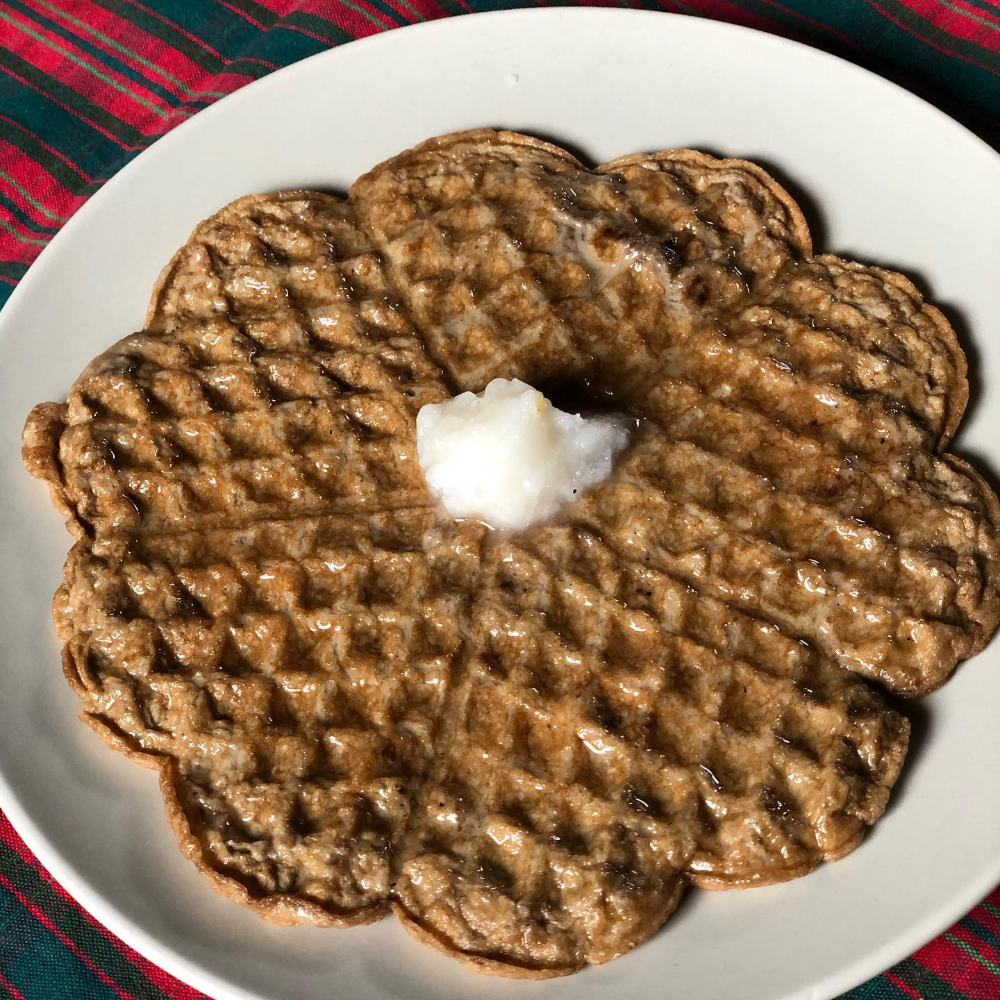

Vnútornosti podľa @vyzivamasozravca — Normy Jedál
Stále neviete ako prísť na chuť pečeni? Takúto výbornú palacinku som odkukala od @ancestralcarnivore
Len 2 vajcia, soľ a 60 g mletej pečene. Výborná je aj pokvapkaná medom. Nedeľa na sladko 🍯#pkd #paleoketodiet #carnivorediet #carnivoreketo #nosetotail #vnutornosti #pečeň #liver #mäsoatuk